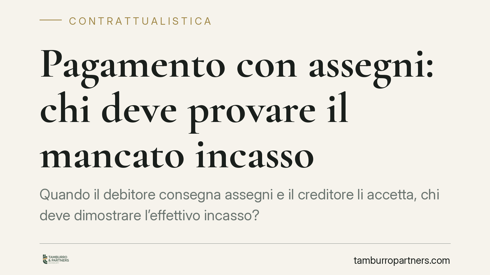

Pagamento con assegni: chi deve provare il mancato incasso
Quando il debitore consegna assegni e il creditore li accetta, chi deve dimostrare l'effettivo incasso? Una recente ordinanza della Cassazione torna sul tema, ribadendo che la prova del mancato buon fine, alla luce dei principi di buona fede e vicinanza della prova, grava sul creditore. Una distinzione che incide su contenziosi di pagamento molto frequenti.

Il caso
Una casa di cura contesta a un ex dipendente somme che assume non versate. Il lavoratore, tramite il proprio difensore, documenta di aver consegnato assegni accettati senza riserva dalla controparte. La questione processuale è netta: chi ha consegnato i titoli ha dimostrato l'adempimento, oppure deve anche provare che quegli assegni sono stati materialmente incassati?
La risposta della Corte di Cassazione — in una recente ordinanza in materia — segue una linea coerente con l'orientamento consolidato sull'onere della prova dell'adempimento.
Inquadramento normativo
La consegna di un assegno a saldo di un debito configura, salvo diversa volontà delle parti, una prestazione in luogo dell'adempimento (art. 1197 c.c.) accettata *pro solvendo*: l'obbligazione originaria non si estingue con la sola consegna del titolo, ma con il suo effettivo incasso. Fin qui il meccanismo è pacifico.
Il punto delicato è processuale: a chi tocca provare cosa. Le Sezioni Unite, con la nota sentenza n. 13533/2001, hanno fissato il principio secondo cui il creditore che agisce per l'adempimento deve provare il titolo, mentre spetta al debitore provare il fatto estintivo (il pagamento). Quando però il debitore dimostra di aver consegnato assegni accettati dal creditore, ha fornito un principio di prova dell'adempimento. A quel punto diventa decisivo il principio di vicinanza della prova: il mancato incasso del titolo, e le relative ragioni, rientrano nella sfera di conoscenza e documentazione del creditore, che è il legittimato a presentare l'assegno per il pagamento.
Gli artt. 1175 e 1375 c.c. — correttezza e buona fede nell'esecuzione del contratto — completano il quadro: il rapporto obbligatorio impone a entrambe le parti un dovere di cooperazione. Il creditore che riceve e trattiene assegni non può limitarsi ad affermare di non essere stato pagato: deve allegare e dimostrare perché quei titoli non hanno avuto buon fine (mancata presentazione, protesto, insufficienza fondi riferibile al debitore).
Implicazioni pratiche
Per chi paga, la conseguenza è concreta: la consegna documentata di assegni accettati non è un atto neutro, ma incide sulla distribuzione dell'onere probatorio. Il debitore non deve procurarsi la prova — spesso impossibile — dell'avvenuto incasso da parte altrui.
Per chi riceve il pagamento, lo specchio è altrettanto netto: accettare assegni e poi rivendicare il credito impone di conservare la documentazione bancaria e di spiegare l'eventuale mancato buon fine. Un'affermazione generica di mancato pagamento, non supportata da riscontri, rischia di non reggere in giudizio.
Si tratta di scenari quotidiani nei rapporti commerciali, nelle transazioni e nella chiusura di rapporti di lavoro, dove i pagamenti a saldo con assegno sono frequenti.
Cosa fare in concreto
- Documentate ogni consegna di assegni: annotate numero, importo, data e banca trattaria, e conservate ricevuta o quietanza sottoscritta dal creditore.
- Richiedete una dichiarazione di accettazione esplicita, che attesti il ricevimento dei titoli a saldo o in acconto dell'importo dovuto.
- Conservate gli estratti conto e ogni evidenza bancaria: anche dal lato di chi paga, la traccia dell'addebito è un riscontro prezioso.
- Se siete creditori e un assegno non va a buon fine, formalizzate subito la contestazione con i documenti bancari (mancata presentazione, protesto, impagato) e comunicatela alla controparte.
- In caso di contenzioso, impostate la difesa sulla corretta ripartizione dell'onere della prova: consigliamo di valutare con un legale la coerenza tra documenti disponibili e tesi sostenibile.
Conclusione
La linea tracciata dalla giurisprudenza premia la diligenza documentale e il dovere di cooperazione tra le parti. Chi ha consegnato assegni accettati ha compiuto un passo probatorio significativo; chi li ha ricevuti deve farsi carico di spiegare l'eventuale mancato incasso. Una regola di equilibrio, prima ancora che di tecnica processuale.
Resta inteso che l'esito di ogni vicenda dipende dai fatti specifici e dalla documentazione effettivamente disponibile.
Ogni contratto ha il suo equilibrio.
Se vuoi una revisione delle clausole o una redazione su misura, scrivi allo studio. Ti rispondiamo entro un giorno lavorativo.